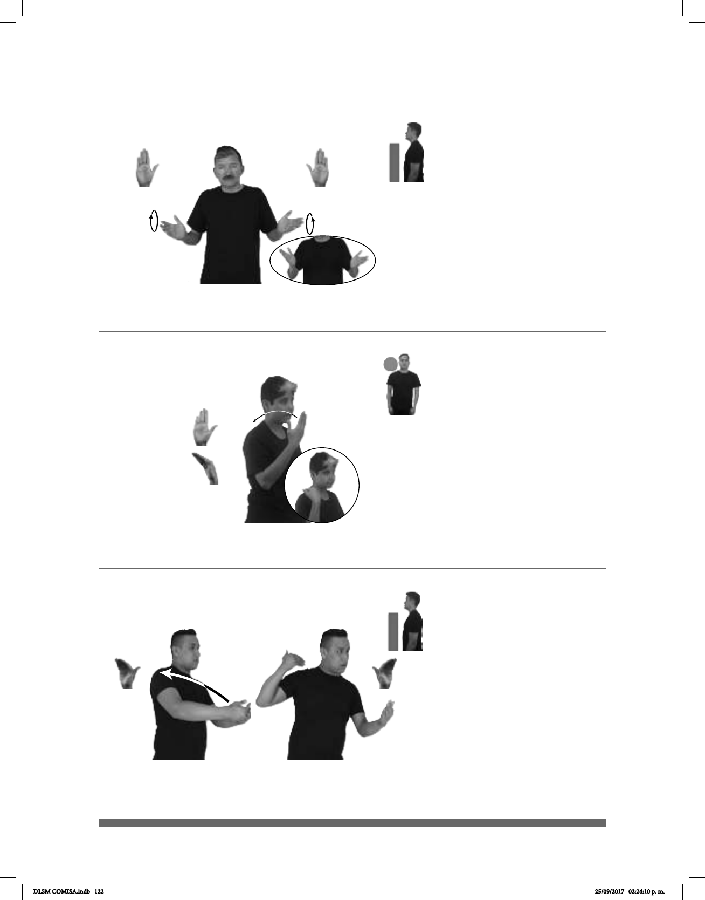

122
(B-P 34)
AYER pro-ÉL TRISTE pro-YO ANIMAR-a-él AYER HELADO pro-YO COMPRAR
Él estaba triste ayer, yo lo animé, le compré un helado.
Seña: SS
B-P.2
Palmas oblicuas hacia
afuera y hacia el centro.
A la altura del pecho.
Circular hacia arriba.
v. tr. Impulsar a alguien
para que haga algo; infundirle el
deseo o las ganas de lograr alguna
cosa o motivarlo para que se esfuerce
en determinada actividad.
(B-P 35)
–
1
/ Pasado
2
ANTES pro-YO COMER++
Yo comía mucho antes.
Seña: SM
Seña que pasa de B-P.2
a B-P.12
La palma inicia hacia
dentro y termina hacia abajo.
A la altura del hombro.
La mano se mueve
formando un arco hacia atrás.
1. adv. En un momento
pasado o en un lugar que se localiza
primero en relación con el que se toma
como referencia. 2. adj. Que ha sucedido,
que ya terminó, que es inmediatamente
anterior a hoy o a lo que es actual.
(B-P 36)
–
1
/ Pasado
2
ANTES pro-YO COMER++
Yo comía mucho antes.
Seña: SB
MD y MB B-P.8
MD y MB palmas hacia
adentro.
MD inicia sobre MB y
termina a la altura del cuello, MB a la
altura del pecho.
MD recto.
1. adv. En un momento
pasado o en un lugar que se
localiza primero en relación con el que
se toma como referencia. 2. adj. Que ha
sucedido, que ya terminó, que es
inmediatamente anterior a hoy o a lo
que es actual.
DLSM COMISA.indb 122 25/09/2017 02:24:10 p. m.